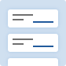

無限スクロールフィードの例
この例について

注記: フィードロールは WAI-ARIA 1.1 によって導入されました。 ネイティブデスクトップオペレーティングシステムはフィードパターンに適用できる規約がほとんどないため、この例で示されているフィードの実装は提案として提供することを意図しています。 フィードバックは issue 565 で歓迎します。
以下の例はレストランレビューサイトのための フィードパターン を実装しています。 無限にスクロールするデータセットを模倣するために、利用者がフィードを読むにつれて 10 件のレストラン情報が繰り返し読み込まれます。 この例にはデータ取得の遅延をシミュレートする記事読み込み時間セレクターが含まれています。
例の使用オプション
次の記事読み込み遅延時間セレクターは、データ取得によって導入されるさまざまな量の遅延をシミュレートすることを可能にします。 そのような遅延は、支援技術機能を使用して記事ごとにナビゲートする際に支援技術の動作に影響を与える可能性があります。
例
以下の例のフィード体験は、ページの残りのコンテンツを妨げないように iframe で表示されています。
キーボードのサポート
| キー | 機能 |
|---|---|
| Page Down | 次の記事にフォーカスを移動します。 |
| Page Up | 前の記事にフォーカスを移動します。 |
| Control + End | フィードの後ろにある最初のフォーカス可能な要素にフォーカスを移動します。 |
| Control + Home | フィード内の最初のフォーカス可能な要素にフォーカスを移動します。 |
ロール、プロパティ、ステート、及び tabindex 属性
| ロール | 属性 | 要素 | 使用法 |
|---|---|---|---|
feed |
div |
|
|
aria-labelledby="IDREF" |
div |
フィード要素にアクセシブルな名前を提供します。 | |
aria-busy="true" |
div |
|
|
article |
div |
|
|
tabindex="0" |
div |
|
|
aria-labelledby="IDREF_LIST" |
div |
|
|
aria-describedby="IDREF_LIST" |
div |
|
|
aria-posinset="INTEGER" |
div |
|
|
aria-setsize="INTEGER" |
div |
現在フィード要素に含まれている記事の総数を設定します。 |
JavaScript 及び CSS のソースコード
以下の JavaScript 及び CSS は feed-display.html ページで使用されています:
- CSS: feedDisplay.css
- JavaScript: feed.js, feedDisplay.js, main.js, utils.js
HTML のソースコード
feed-display.html を開いてソースを表示してください。